VELOCIDAD DEL VIENTO#
import pandas as pd
import numpy as np
import matplotlib.pyplot as plt
import seaborn as sns
from scipy.stats import skew
# Estilo visual
sns.set(style="whitegrid")
url = "https://raw.githubusercontent.com/lihkir/Data/main/wind_speed/data_treino_dv_df_2000_2010.csv"
df = pd.read_csv(url,s encoding="utf-8")
df.columns = [
"HORA_UTC", # HORA (UTC)
"DIRECCION_VIENTO_GR", # VENTO, DIREÇÃO HORARIA (gr)
"VELOCIDAD_VIENTO_MS", # VENTO, VELOCIDADE HORARIA (m/s)
"HUMEDAD_MAX_ANT", # UMIDADE REL. MAX. NA HORA ANT. (AUT)
"HUMEDAD_MIN_ANT", # UMIDADE REL. MIN. NA HORA ANT. (AUT)
"TEMP_MAX_ANT_C", # TEMPERATURA MÁXIMA NA HORA ANT. (AUT) (°C)
"TEMP_MIN_ANT_C", # TEMPERATURA MÍNIMA NA HORA ANT. (AUT) (°C)
"HUMEDAD_HORARIA", # UMIDADE RELATIVA DO AR, HORARIA
"PRESION_HORARIA", # PRESSAO ATMOSFERICA AO NIVEL DA ESTACAO, HORARIA
"PRECIPITACION_TOTAL", # PRECIPITAÇÃO TOTAL, HORÁRIO
"RAJADA_MAX_VIENTO_MS", # VENTO, RAJADA MAXIMA (m/s)
"PRESION_MAX_ANT", # PRESSÃO ATMOSFERICA MAX.NA HORA ANT.
"PRESION_MIN_ANT" # PRESSÃO ATMOSFERICA MIN. NA HORA ANT.
]
# RESUMEN GENERAL
print(f"Dimensiones: {df.shape}")
print("\nTipos de variables:\n", df.dtypes.value_counts())
# Separar tipos de variables
tipos = df.dtypes.value_counts()
print("Resumen de tipos de variables:")
print(tipos)
# Mostrar cada columna con su tipo específico
print("\nTipo de cada columna:\n")
print(df.dtypes)
# Mostrar nombres largos para reducir
long_columns = [col for col in df.columns if len(col) > 25]
long_columns
Dimensiones: (87693, 13)
Tipos de variables:
float64 12
object 1
Name: count, dtype: int64
Resumen de tipos de variables:
float64 12
object 1
Name: count, dtype: int64
Tipo de cada columna:
HORA_UTC object
DIRECCION_VIENTO_GR float64
VELOCIDAD_VIENTO_MS float64
HUMEDAD_MAX_ANT float64
HUMEDAD_MIN_ANT float64
TEMP_MAX_ANT_C float64
TEMP_MIN_ANT_C float64
HUMEDAD_HORARIA float64
PRESION_HORARIA float64
PRECIPITACION_TOTAL float64
RAJADA_MAX_VIENTO_MS float64
PRESION_MAX_ANT float64
PRESION_MIN_ANT float64
dtype: object
[]
# ESTADÍSTICAS DESCRIPTIVAS
df.describe().T[["count", "mean", "std", "min", "25%", "50%", "75%", "max"]]
| count | mean | std | min | 25% | 50% | 75% | max | |
|---|---|---|---|---|---|---|---|---|
| DIRECCION_VIENTO_GR | 87693.0 | 0.405810 | 0.686247 | -1.0 | -0.156434 | 0.788011 | 0.970296 | 1.0 |
| VELOCIDAD_VIENTO_MS | 87693.0 | 2.466192 | 1.313968 | 0.0 | 1.500000 | 2.400000 | 3.400000 | 10.0 |
| HUMEDAD_MAX_ANT | 87693.0 | 69.058465 | 19.640222 | 12.0 | 54.000000 | 72.000000 | 87.000000 | 100.0 |
| HUMEDAD_MIN_ANT | 87693.0 | 63.176194 | 20.166336 | 10.0 | 48.000000 | 64.000000 | 80.000000 | 98.0 |
| TEMP_MAX_ANT_C | 87693.0 | 21.921264 | 3.721386 | 9.2 | 19.200000 | 21.400000 | 24.700000 | 35.3 |
| TEMP_MIN_ANT_C | 87693.0 | 20.684570 | 3.513744 | 8.4 | 18.400000 | 20.200000 | 23.100000 | 34.4 |
| HUMEDAD_HORARIA | 87693.0 | 66.146682 | 19.992327 | 10.0 | 51.000000 | 68.000000 | 84.000000 | 99.0 |
| PRESION_HORARIA | 87693.0 | 887.251925 | 4.012404 | 863.4 | 885.300000 | 887.200000 | 889.100000 | 1023.5 |
| PRECIPITACION_TOTAL | 87693.0 | 0.160907 | 1.307515 | 0.0 | 0.000000 | 0.000000 | 0.000000 | 70.8 |
| RAJADA_MAX_VIENTO_MS | 87693.0 | 5.161076 | 2.311157 | 0.0 | 3.400000 | 5.000000 | 6.800000 | 24.3 |
| PRESION_MAX_ANT | 87693.0 | 887.580724 | 3.646750 | 865.3 | 885.600000 | 887.500000 | 889.300000 | 913.1 |
| PRESION_MIN_ANT | 87693.0 | 886.891093 | 3.564539 | 862.8 | 885.000000 | 886.900000 | 888.800000 | 910.9 |
# DATOS FALTANTES
faltantes = df.isnull().sum()
porcentaje = (faltantes / len(df)) * 100
missing = pd.DataFrame({"Total": faltantes, "Porcentaje": porcentaje})
missing[missing.Total > 0].sort_values(by="Total", ascending=False)
| Total | Porcentaje |
|---|
# HISTOGRAMAS DE VARIABLES NUMÉRICAS
vars_numericas = df.select_dtypes(include=np.number).columns[:4]
for col in vars_numericas:
plt.figure(figsize=(6,4))
sns.histplot(df[col].dropna(), kde=True)
plt.title(f"Distribución de {col}")
plt.xlabel(col)
plt.ylabel("Frecuencia")
plt.show()
/opt/miniconda3/envs/ml_venv/lib/python3.9/site-packages/seaborn/_oldcore.py:1119: FutureWarning: use_inf_as_na option is deprecated and will be removed in a future version. Convert inf values to NaN before operating instead.
with pd.option_context('mode.use_inf_as_na', True):
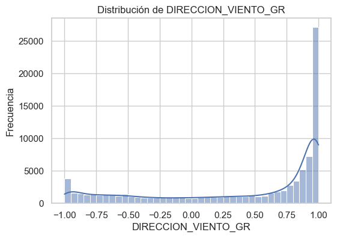
/opt/miniconda3/envs/ml_venv/lib/python3.9/site-packages/seaborn/_oldcore.py:1119: FutureWarning: use_inf_as_na option is deprecated and will be removed in a future version. Convert inf values to NaN before operating instead.
with pd.option_context('mode.use_inf_as_na', True):
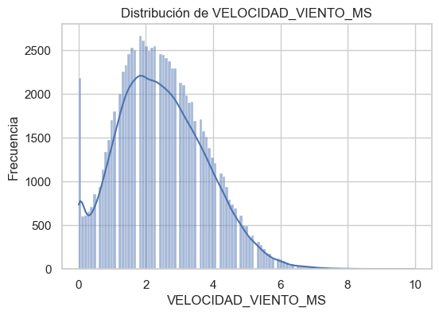
/opt/miniconda3/envs/ml_venv/lib/python3.9/site-packages/seaborn/_oldcore.py:1119: FutureWarning: use_inf_as_na option is deprecated and will be removed in a future version. Convert inf values to NaN before operating instead.
with pd.option_context('mode.use_inf_as_na', True):
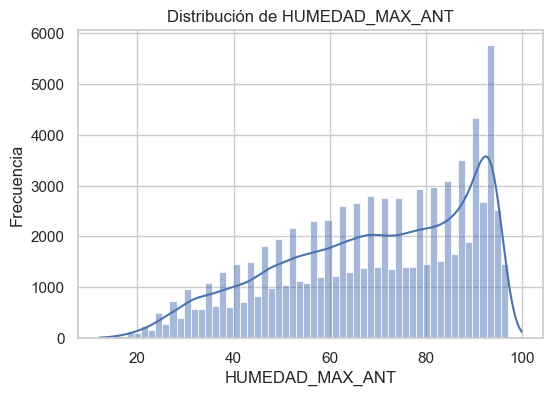
/opt/miniconda3/envs/ml_venv/lib/python3.9/site-packages/seaborn/_oldcore.py:1119: FutureWarning: use_inf_as_na option is deprecated and will be removed in a future version. Convert inf values to NaN before operating instead.
with pd.option_context('mode.use_inf_as_na', True):
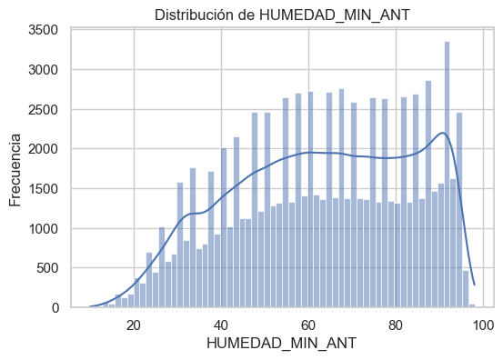
# BOXPLOTS
for col in vars_numericas:
plt.figure(figsize=(6,4))
sns.boxplot(x=df[col].dropna())
plt.title(f"Boxplot de {col}")
plt.show()
print(f"Asimetría (skew) de {col}: {skew(df[col].dropna()):.2f}")
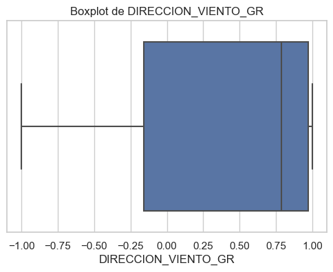
Asimetría (skew) de DIRECCION_VIENTO_GR: -0.86
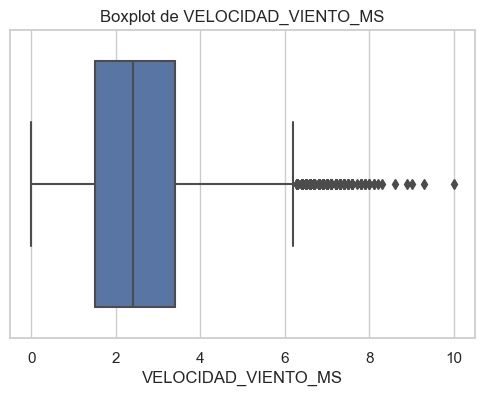
Asimetría (skew) de VELOCIDAD_VIENTO_MS: 0.37
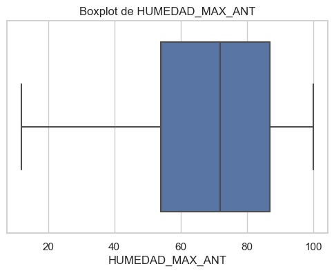
Asimetría (skew) de HUMEDAD_MAX_ANT: -0.48
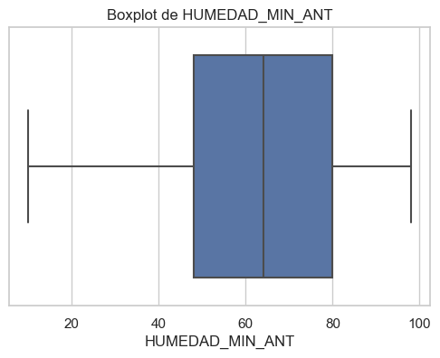
Asimetría (skew) de HUMEDAD_MIN_ANT: -0.23
import matplotlib.pyplot as plt
import seaborn as sns
# Define aquí 4 pares de variables explicativas
pares = [
('DIRECCION_VIENTO_GR', 'VELOCIDAD_VIENTO_MS'),
('VELOCIDAD_VIENTO_MS', 'HUMEDAD_HORARIA'),
('TEMP_MAX_ANT_C', 'PRESION_HORARIA'),
('PRECIPITACION_TOTAL', 'RAJADA_MAX_VIENTO_MS')
]
# Itera sobre cada par y dibuja scatterplot y regplot
for x, y in pares:
fig, axes = plt.subplots(1, 2, figsize=(12, 4))
# Scatterplot puro
sns.scatterplot(
data=df,
x=x,
y=y,
ax=axes[0],
alpha=0.5
)
axes[0].set_title(f'Scatterplot: {x} vs {y}')
axes[0].set_xlabel(x)
axes[0].set_ylabel(y)
# Regplot (scatter + línea de regresión)
sns.regplot(
data=df,
x=x,
y=y,
ax=axes[1],
scatter_kws={'alpha': 0.3},
line_kws={'color': 'red'}
)
axes[1].set_title(f'Regplot: {x} vs {y}')
axes[1].set_xlabel(x)
axes[1].set_ylabel(y)
plt.tight_layout()
plt.show()
# Análisis cualitativo breve
corr = df[[x, y]].dropna().corr().iloc[0, 1]
print(f"Correlación de Pearson entre {x} y {y}: {corr:.2f}\n")
Correlación de Pearson entre DIRECCION_VIENTO_GR y VELOCIDAD_VIENTO_MS: 0.26
Correlación de Pearson entre VELOCIDAD_VIENTO_MS y HUMEDAD_HORARIA: -0.30
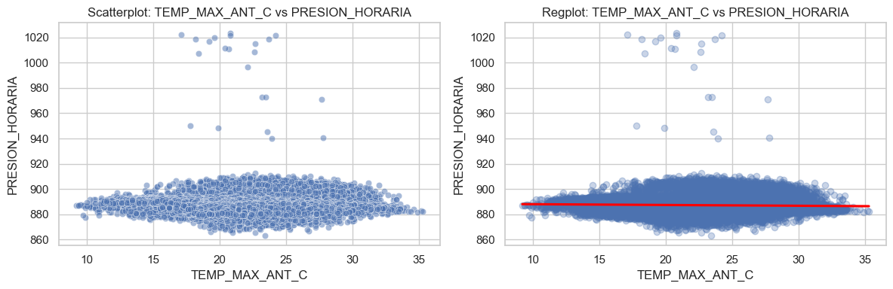
Correlación de Pearson entre TEMP_MAX_ANT_C y PRESION_HORARIA: -0.06
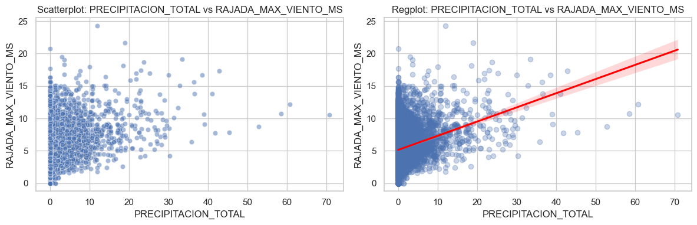
Correlación de Pearson entre PRECIPITACION_TOTAL y RAJADA_MAX_VIENTO_MS: 0.12
Detección de fraude#
import pandas as pd
import numpy as np
import matplotlib.pyplot as plt
import seaborn as sns
from scipy.stats import skew
from sklearn.impute import SimpleImputer
from statsmodels.stats.outliers_influence import variance_inflation_factor
# Cargar los archivos
train_transaction = pd.read_csv("train_transaction.csv")
train_identity = pd.read_csv("train_identity.csv")
# Unir por TransactionID
train_data = pd.merge(train_transaction, train_identity, on='TransactionID', how='left')
# Verificar
print("Dimensiones del conjunto unido:", train_data.shape)
train_data.head()
print("\nTipo de cada columna:\n")
print(train_data.dtypes)
Dimensiones del conjunto unido: (590540, 434)
Tipo de cada columna:
TransactionID int64
isFraud int64
TransactionDT int64
TransactionAmt float64
ProductCD object
...
id_36 object
id_37 object
id_38 object
DeviceType object
DeviceInfo object
Length: 434, dtype: object
sns.countplot(x='isFraud', data=train_data)
plt.title("Distribución de Fraude vs No Fraude")
plt.xlabel("¿Es Fraude?")
plt.ylabel("Cantidad")
plt.show()
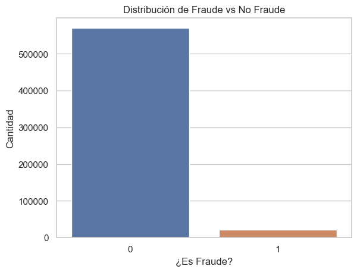
# Conteo absoluto
conteo = train_data['isFraud'].value_counts()
print("Conteo de clases:\n", conteo)
# Porcentaje
porcentaje = train_data['isFraud'].value_counts(normalize=True) * 100
print("\nPorcentaje de clases:\n", porcentaje)
Conteo de clases:
isFraud
0 569877
1 20663
Name: count, dtype: int64
Porcentaje de clases:
isFraud
0 96.500999
1 3.499001
Name: proportion, dtype: float64
# Cargar los archivos para test
test_transaction = pd.read_csv("test_transaction.csv")
test_identity = pd.read_csv("test_identity.csv")
# Unir por TransactionID
test_data = pd.merge(test_transaction, test_identity, on='TransactionID', how='left')
# Verificar
print("Dimensiones del conjunto unido:", test_data.shape)
test_data.head()
print("\nTipo de cada columna:\n")
print(test_data.dtypes)
Dimensiones del conjunto unido: (506691, 433)
Tipo de cada columna:
TransactionID int64
TransactionDT int64
TransactionAmt float64
ProductCD object
card1 int64
...
id-36 object
id-37 object
id-38 object
DeviceType object
DeviceInfo object
Length: 433, dtype: object
Imputación#
# Paso 1: Identificar variables numéricas (excluye 'isFraud')
numericas = train_data.select_dtypes(include='number').columns.drop('isFraud', errors='ignore')
# Paso 2: Imputar valores faltantes con la mediana
imputer = SimpleImputer(strategy='median')
X = pd.DataFrame(imputer.fit_transform(train_data[numericas]), columns=numericas)
# Paso 3: Eliminar variables altamente correlacionadas (> 0.90)
corr_matrix = X.corr().abs()
upper = corr_matrix.where(np.triu(np.ones(corr_matrix.shape), k=1).astype(bool))
cols_correladas = [col for col in upper.columns if any(upper[col] > 0.90)]
X_filtrado = X.drop(columns=cols_correladas)
# Paso 4: Limitar a las primeras 50 columnas
X_reducido = X_filtrado.iloc[:, :50]
# Paso 5: Eliminar TODAS las variables con VIF ≥ 10 en un solo paso
def calcular_vif_una_vez(df, threshold=10):
vif = pd.Series(
[variance_inflation_factor(df.values, i) for i in range(df.shape[1])],
index=df.columns
)
altas = vif[vif >= threshold].index.tolist()
print(f"🗑️ Eliminando {len(altas)} variables con VIF ≥ {threshold}: {altas}")
df_reducido = df.drop(columns=altas)
return df_reducido, altas
# Ejecutar eliminación rápida
X_sin_colinealidad, columnas_eliminadas = calcular_vif_una_vez(X_reducido)
# Paso 6: Reagregar la variable objetivo
train_data_reducido = pd.concat([X_sin_colinealidad, train_data['isFraud'].reset_index(drop=True)], axis=1)
# Confirmación
print("✅ Dataset final:", train_data_reducido.shape)
print("🗑️ Variables eliminadas por VIF:", columnas_eliminadas)
🗑️ Eliminando 22 variables con VIF ≥ 10: ['TransactionID', 'card3', 'card5', 'addr1', 'addr2', 'C1', 'C5', 'C13', 'D9', 'V1', 'V2', 'V3', 'V4', 'V6', 'V7', 'V8', 'V9', 'V14', 'V23', 'V24', 'V25', 'V26']
✅ Dataset final: (590540, 29)
🗑️ Variables eliminadas por VIF: ['TransactionID', 'card3', 'card5', 'addr1', 'addr2', 'C1', 'C5', 'C13', 'D9', 'V1', 'V2', 'V3', 'V4', 'V6', 'V7', 'V8', 'V9', 'V14', 'V23', 'V24', 'V25', 'V26']
from sklearn.preprocessing import OneHotEncoder
from scipy.stats import chi2_contingency
# Paso 1: Seleccionar variables categóricas
categoricas = train_data.select_dtypes(include='object').columns
# Paso 2: Filtrar solo las que tienen pocas categorías únicas (evita explosión de columnas)
categoricas_bajas = [col for col in categoricas if train_data[col].nunique() <= 10]
# Paso 3: Analizar redundancia entre variables categóricas usando chi²
redundantes = []
for i in range(len(categoricas_bajas)):
for j in range(i + 1, len(categoricas_bajas)):
tabla = pd.crosstab(train_data[categoricas_bajas[i]], train_data[categoricas_bajas[j]])
if tabla.shape[0] > 1 and tabla.shape[1] > 1:
chi2, p, _, _ = chi2_contingency(tabla)
if p < 0.01: # asociación fuerte → posible redundancia
redundantes.append((categoricas_bajas[i], categoricas_bajas[j], p))
# Mostrar pares redundantes
print("🔁 Posibles variables categóricas redundantes (p < 0.01):")
for par in redundantes:
print(f"{par[0]} ~ {par[1]} (p = {par[2]:.4f})")
🔁 Posibles variables categóricas redundantes (p < 0.01):
ProductCD ~ card4 (p = 0.0000)
ProductCD ~ card6 (p = 0.0000)
ProductCD ~ M4 (p = 0.0000)
ProductCD ~ id_12 (p = 0.0000)
ProductCD ~ id_15 (p = 0.0000)
ProductCD ~ id_16 (p = 0.0000)
ProductCD ~ id_23 (p = 0.0000)
ProductCD ~ id_27 (p = 0.0003)
ProductCD ~ id_28 (p = 0.0000)
ProductCD ~ id_29 (p = 0.0000)
ProductCD ~ id_34 (p = 0.0000)
ProductCD ~ id_35 (p = 0.0000)
ProductCD ~ id_36 (p = 0.0000)
ProductCD ~ id_37 (p = 0.0000)
ProductCD ~ id_38 (p = 0.0000)
ProductCD ~ DeviceType (p = 0.0000)
card4 ~ card6 (p = 0.0000)
card4 ~ M2 (p = 0.0000)
card4 ~ M3 (p = 0.0001)
card4 ~ M4 (p = 0.0000)
card4 ~ M5 (p = 0.0000)
card4 ~ M6 (p = 0.0000)
card4 ~ M7 (p = 0.0000)
card4 ~ M8 (p = 0.0028)
card4 ~ M9 (p = 0.0000)
card4 ~ id_12 (p = 0.0000)
card4 ~ id_15 (p = 0.0000)
card4 ~ id_16 (p = 0.0000)
card4 ~ id_23 (p = 0.0000)
card4 ~ id_27 (p = 0.0000)
card4 ~ id_28 (p = 0.0000)
card4 ~ id_29 (p = 0.0000)
card4 ~ id_34 (p = 0.0000)
card4 ~ id_35 (p = 0.0000)
card4 ~ id_36 (p = 0.0000)
card4 ~ id_37 (p = 0.0000)
card4 ~ id_38 (p = 0.0000)
card4 ~ DeviceType (p = 0.0000)
card6 ~ M2 (p = 0.0000)
card6 ~ M3 (p = 0.0000)
card6 ~ M4 (p = 0.0000)
card6 ~ M5 (p = 0.0000)
card6 ~ M6 (p = 0.0000)
card6 ~ M7 (p = 0.0000)
card6 ~ M8 (p = 0.0001)
card6 ~ M9 (p = 0.0000)
card6 ~ id_12 (p = 0.0000)
card6 ~ id_15 (p = 0.0000)
card6 ~ id_16 (p = 0.0000)
card6 ~ id_23 (p = 0.0000)
card6 ~ id_28 (p = 0.0000)
card6 ~ id_29 (p = 0.0000)
card6 ~ id_34 (p = 0.0000)
card6 ~ id_35 (p = 0.0000)
card6 ~ id_36 (p = 0.0000)
card6 ~ id_37 (p = 0.0000)
card6 ~ DeviceType (p = 0.0000)
M1 ~ M2 (p = 0.0000)
M1 ~ M3 (p = 0.0000)
M1 ~ M9 (p = 0.0008)
M2 ~ M3 (p = 0.0000)
M2 ~ M4 (p = 0.0005)
M2 ~ M5 (p = 0.0000)
M2 ~ M6 (p = 0.0000)
M2 ~ M7 (p = 0.0000)
M2 ~ M8 (p = 0.0000)
M2 ~ M9 (p = 0.0000)
M3 ~ M4 (p = 0.0000)
M3 ~ M5 (p = 0.0000)
M3 ~ M6 (p = 0.0000)
M3 ~ M7 (p = 0.0000)
M3 ~ M8 (p = 0.0000)
M3 ~ M9 (p = 0.0000)
M4 ~ M5 (p = 0.0000)
M4 ~ M6 (p = 0.0000)
M4 ~ M7 (p = 0.0000)
M4 ~ M9 (p = 0.0006)
M4 ~ id_15 (p = 0.0000)
M4 ~ id_16 (p = 0.0000)
M4 ~ id_28 (p = 0.0000)
M4 ~ id_29 (p = 0.0000)
M4 ~ id_36 (p = 0.0000)
M4 ~ id_37 (p = 0.0000)
M4 ~ id_38 (p = 0.0000)
M4 ~ DeviceType (p = 0.0000)
M5 ~ M6 (p = 0.0000)
M5 ~ M8 (p = 0.0000)
M5 ~ M9 (p = 0.0000)
M6 ~ M7 (p = 0.0000)
M6 ~ M8 (p = 0.0000)
M6 ~ M9 (p = 0.0000)
M7 ~ M8 (p = 0.0000)
M7 ~ M9 (p = 0.0000)
M8 ~ M9 (p = 0.0000)
id_12 ~ id_15 (p = 0.0000)
id_12 ~ id_16 (p = 0.0000)
id_12 ~ id_23 (p = 0.0000)
id_12 ~ id_28 (p = 0.0000)
id_12 ~ id_29 (p = 0.0000)
id_12 ~ id_34 (p = 0.0000)
id_12 ~ id_35 (p = 0.0000)
id_12 ~ id_36 (p = 0.0000)
id_12 ~ id_37 (p = 0.0000)
id_12 ~ id_38 (p = 0.0000)
id_12 ~ DeviceType (p = 0.0000)
id_15 ~ id_16 (p = 0.0000)
id_15 ~ id_23 (p = 0.0000)
id_15 ~ id_28 (p = 0.0000)
id_15 ~ id_29 (p = 0.0000)
id_15 ~ id_34 (p = 0.0000)
id_15 ~ id_35 (p = 0.0000)
id_15 ~ id_36 (p = 0.0000)
id_15 ~ id_37 (p = 0.0000)
id_15 ~ id_38 (p = 0.0000)
id_15 ~ DeviceType (p = 0.0000)
id_16 ~ id_23 (p = 0.0000)
id_16 ~ id_28 (p = 0.0000)
id_16 ~ id_29 (p = 0.0000)
id_16 ~ id_34 (p = 0.0000)
id_16 ~ id_35 (p = 0.0000)
id_16 ~ id_36 (p = 0.0000)
id_16 ~ id_37 (p = 0.0000)
id_16 ~ id_38 (p = 0.0000)
id_16 ~ DeviceType (p = 0.0000)
id_23 ~ id_28 (p = 0.0000)
id_23 ~ id_29 (p = 0.0000)
id_23 ~ id_34 (p = 0.0000)
id_23 ~ id_35 (p = 0.0000)
id_23 ~ id_36 (p = 0.0000)
id_23 ~ id_37 (p = 0.0000)
id_23 ~ DeviceType (p = 0.0000)
id_27 ~ DeviceType (p = 0.0004)
id_28 ~ id_29 (p = 0.0000)
id_28 ~ id_34 (p = 0.0000)
id_28 ~ id_35 (p = 0.0000)
id_28 ~ id_36 (p = 0.0000)
id_28 ~ id_37 (p = 0.0000)
id_28 ~ id_38 (p = 0.0000)
id_28 ~ DeviceType (p = 0.0000)
id_29 ~ id_34 (p = 0.0000)
id_29 ~ id_35 (p = 0.0000)
id_29 ~ id_36 (p = 0.0000)
id_29 ~ id_37 (p = 0.0000)
id_29 ~ id_38 (p = 0.0000)
id_29 ~ DeviceType (p = 0.0000)
id_34 ~ id_36 (p = 0.0000)
id_34 ~ id_37 (p = 0.0000)
id_34 ~ id_38 (p = 0.0000)
id_34 ~ DeviceType (p = 0.0000)
id_35 ~ id_36 (p = 0.0000)
id_35 ~ id_37 (p = 0.0000)
id_35 ~ id_38 (p = 0.0000)
id_35 ~ DeviceType (p = 0.0000)
id_36 ~ id_37 (p = 0.0000)
id_36 ~ id_38 (p = 0.0000)
id_36 ~ DeviceType (p = 0.0000)
id_37 ~ id_38 (p = 0.0000)
id_37 ~ DeviceType (p = 0.0000)
id_38 ~ DeviceType (p = 0.0000)
# Paso 4: Elegir solo las no redundantes para codificar
# (manual o automática según las pruebas anteriores)
categoricas_a_codificar = list(set(categoricas_bajas) - set([r[1] for r in redundantes]))
# Paso 5: Codificar usando OneHotEncoder
encoder = OneHotEncoder(handle_unknown='ignore', sparse=False)
encoded = encoder.fit_transform(train_data[categoricas_a_codificar])
encoded_df = pd.DataFrame(encoded, columns=encoder.get_feature_names_out(categoricas_a_codificar))
# Paso 6: Integrar al conjunto final
train_final = pd.concat([
train_data_reducido.reset_index(drop=True).drop(columns=categoricas_a_codificar, errors='ignore'),
encoded_df.reset_index(drop=True)
], axis=1)
print("Dataset final con categóricas codificadas:", train_final.shape)
/opt/miniconda3/envs/ml_venv/lib/python3.9/site-packages/sklearn/preprocessing/_encoders.py:972: FutureWarning: `sparse` was renamed to `sparse_output` in version 1.2 and will be removed in 1.4. `sparse_output` is ignored unless you leave `sparse` to its default value.
warnings.warn(
✅ Dataset final con categóricas codificadas: (590540, 37)
print("Dimensiones finales:", train_final.shape)
print("Columnas finales:\n", train_final.columns.tolist())
train_final.head()
Dimensiones finales: (590540, 37)
Columnas finales:
['TransactionAmt', 'card1', 'card2', 'dist1', 'dist2', 'C3', 'D1', 'D3', 'D4', 'D5', 'D6', 'D7', 'D8', 'D10', 'D11', 'D12', 'D13', 'D14', 'D15', 'V10', 'V12', 'V15', 'V17', 'V19', 'V27', 'V29', 'V35', 'V37', 'isFraud', 'ProductCD_C', 'ProductCD_H', 'ProductCD_R', 'ProductCD_S', 'ProductCD_W', 'M1_F', 'M1_T', 'M1_nan']
| TransactionAmt | card1 | card2 | dist1 | dist2 | C3 | D1 | D3 | D4 | D5 | ... | V37 | isFraud | ProductCD_C | ProductCD_H | ProductCD_R | ProductCD_S | ProductCD_W | M1_F | M1_T | M1_nan | |
|---|---|---|---|---|---|---|---|---|---|---|---|---|---|---|---|---|---|---|---|---|---|
| 0 | 68.5 | 13926.0 | 361.0 | 19.0 | 37.0 | 0.0 | 14.0 | 13.0 | 26.0 | 10.0 | ... | 1.0 | 0 | 0.0 | 0.0 | 0.0 | 0.0 | 1.0 | 0.0 | 1.0 | 0.0 |
| 1 | 29.0 | 2755.0 | 404.0 | 8.0 | 37.0 | 0.0 | 0.0 | 8.0 | 0.0 | 10.0 | ... | 1.0 | 0 | 0.0 | 0.0 | 0.0 | 0.0 | 1.0 | 0.0 | 0.0 | 1.0 |
| 2 | 59.0 | 4663.0 | 490.0 | 287.0 | 37.0 | 0.0 | 0.0 | 8.0 | 0.0 | 10.0 | ... | 1.0 | 0 | 0.0 | 0.0 | 0.0 | 0.0 | 1.0 | 0.0 | 1.0 | 0.0 |
| 3 | 50.0 | 18132.0 | 567.0 | 8.0 | 37.0 | 0.0 | 112.0 | 0.0 | 94.0 | 0.0 | ... | 1.0 | 0 | 0.0 | 0.0 | 0.0 | 0.0 | 1.0 | 0.0 | 0.0 | 1.0 |
| 4 | 50.0 | 4497.0 | 514.0 | 8.0 | 37.0 | 0.0 | 0.0 | 8.0 | 26.0 | 10.0 | ... | 1.0 | 0 | 0.0 | 1.0 | 0.0 | 0.0 | 0.0 | 0.0 | 0.0 | 1.0 |
5 rows × 37 columns
train_final.describe(include='all')
| TransactionAmt | card1 | card2 | dist1 | dist2 | C3 | D1 | D3 | D4 | D5 | ... | V37 | isFraud | ProductCD_C | ProductCD_H | ProductCD_R | ProductCD_S | ProductCD_W | M1_F | M1_T | M1_nan | |
|---|---|---|---|---|---|---|---|---|---|---|---|---|---|---|---|---|---|---|---|---|---|
| count | 590540.000000 | 590540.000000 | 590540.000000 | 590540.000000 | 590540.000000 | 590540.000000 | 590540.000000 | 590540.000000 | 590540.000000 | 590540.000000 | ... | 590540.000000 | 590540.000000 | 590540.000000 | 590540.000000 | 590540.000000 | 590540.000000 | 590540.000000 | 590540.000000 | 590540.000000 | 590540.000000 |
| mean | 135.027176 | 9898.734658 | 362.531959 | 52.585031 | 49.415459 | 0.005644 | 94.151273 | 19.287537 | 107.392422 | 25.370124 | ... | 1.077145 | 0.034990 | 0.116028 | 0.055922 | 0.063838 | 0.019690 | 0.744522 | 0.000042 | 0.540886 | 0.459071 |
| std | 239.162522 | 4901.170153 | 156.595356 | 242.353179 | 141.769757 | 0.150536 | 157.547693 | 47.556448 | 169.488426 | 63.449427 | ... | 0.585511 | 0.183755 | 0.320258 | 0.229771 | 0.244465 | 0.138934 | 0.436130 | 0.006506 | 0.498326 | 0.498322 |
| min | 0.251000 | 1000.000000 | 100.000000 | 0.000000 | 0.000000 | 0.000000 | 0.000000 | 0.000000 | -122.000000 | 0.000000 | ... | 0.000000 | 0.000000 | 0.000000 | 0.000000 | 0.000000 | 0.000000 | 0.000000 | 0.000000 | 0.000000 | 0.000000 |
| 25% | 43.321000 | 6019.000000 | 215.000000 | 8.000000 | 37.000000 | 0.000000 | 0.000000 | 7.000000 | 0.000000 | 10.000000 | ... | 1.000000 | 0.000000 | 0.000000 | 0.000000 | 0.000000 | 0.000000 | 0.000000 | 0.000000 | 0.000000 | 0.000000 |
| 50% | 68.769000 | 9678.000000 | 361.000000 | 8.000000 | 37.000000 | 0.000000 | 3.000000 | 8.000000 | 26.000000 | 10.000000 | ... | 1.000000 | 0.000000 | 0.000000 | 0.000000 | 0.000000 | 0.000000 | 1.000000 | 0.000000 | 1.000000 | 0.000000 |
| 75% | 125.000000 | 14184.000000 | 512.000000 | 8.000000 | 37.000000 | 0.000000 | 121.000000 | 11.000000 | 123.000000 | 10.000000 | ... | 1.000000 | 0.000000 | 0.000000 | 0.000000 | 0.000000 | 0.000000 | 1.000000 | 0.000000 | 1.000000 | 1.000000 |
| max | 31937.391000 | 18396.000000 | 600.000000 | 10286.000000 | 11623.000000 | 26.000000 | 640.000000 | 819.000000 | 869.000000 | 819.000000 | ... | 54.000000 | 1.000000 | 1.000000 | 1.000000 | 1.000000 | 1.000000 | 1.000000 | 1.000000 | 1.000000 | 1.000000 |
8 rows × 37 columns
train_final['isFraud'].value_counts(normalize=True) * 100
isFraud
0 96.500999
1 3.499001
Name: proportion, dtype: float64
from imblearn.over_sampling import SMOTE
# Separar X e y desde train_final
X_train = train_final.drop(columns=['isFraud'])
y_train = train_final['isFraud']
# Aplicar SMOTE solo al conjunto de entrenamiento
smote = SMOTE(random_state=42)
X_train_res, y_train_res = smote.fit_resample(X_train, y_train)
# Verificar balance después del SMOTE
print("Distribución de clases después de SMOTE:")
print(y_train_res.value_counts(normalize=True))
Distribución de clases después de SMOTE:
isFraud
0 0.5
1 0.5
Name: proportion, dtype: float64
TEST